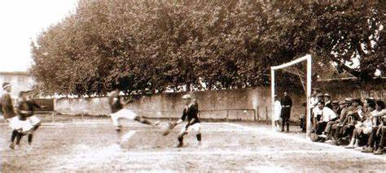
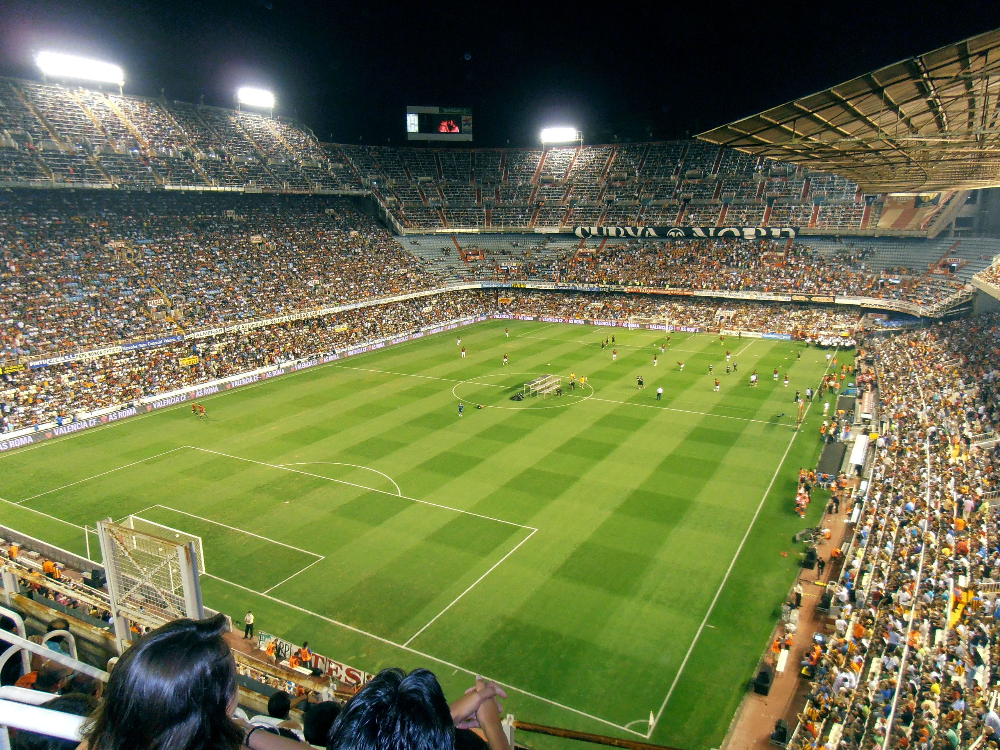

Historia del Valencia CF
Fundación
El Valencia Club de Fútbol fue fundado el 18 de marzo de 1919 por un grupo de valencianos encabezados por Octavio Augusto Milego Díaz. El equipo comenzó a jugar en el campo de Algirós, donde permaneció hasta la construcción del Estadio de Mestalla en 1923. En sus primeros años, el Valencia CF participó en varias competiciones regionales y nacionales, pero no fue hasta la década de 1940 que empezó a conseguir grandes éxitos.
En 1941, el Valencia CF ganó su primer título importante al ganar la Copa del Rey. Dos años después, en 1943, consiguieron su primer campeonato de Liga, tras un emocionante enfrentamiento con el Atlético de Madrid.
A lo largo de los años, el Valencia CF ha experimentado altibajos, pero ha conseguido mantenerse como uno de los equipos más importantes de España y Europa. Ha ganado varios títulos de Liga y Copa del Rey, así como dos títulos de la UEFA Champions League y una Recopa de Europa. Además, ha sido finalista en otras ocasiones en competiciones nacionales e internacionales.
Primer equipo
El Valencia CF ha contado con algunos de los mejores jugadores del mundo a lo largo de su historia. Algunos de los más destacados son:
- Antonio Puchades
- Waldo Machado
- Kempes
- Butragueño
- Mendieta
- David Villa
- Parejo
Títulos
A continuación se muestran los principales títulos conseguidos por el Valencia CF:
| Año | Título |
|---|---|
| 1941 | Copa del Rey |
| 1943 | Campeonato de Liga |
| 1949 | Copa del Rey |
| 1954 | Copa del Rey |
| 1962 | Copa del Rey |
| 1979 | Copa del Rey |
| 1980 | Supercopa de España |
| 2004 | Supercopa de España |
| 2004 | Copa del Rey |
| 2002 | UEFA Champions League |
| 2004 | UEFA Cup |
| 1979 | Recopa de Europa |
Estadio
El Valencia CF juega sus partidos como local en el Estadio Mestalla, inaugurado en 1923. El estadio ha sido remodelado en varias ocasiones a lo largo de su historia, y actualmente tiene capacidad para más de 55.000 espectadores.
Ubicación de Mestalla en la ciudad de Valencia
El futuro del Valencia CF
A pesar de las dificultades económicas y deportivas que ha atravesado el Valencia CF en los últimos años, el club sigue trabajando para volver a ser uno de los equipos más importantes de España y Europa.
En los últimos años, el Valencia CF ha realizado importantes inversiones en su cantera y ha apostado por un estilo de juego basado en el fútbol de ataque y la posesión del balón.
Además, el club ha anunciado recientemente la construcción de un nuevo estadio, el "Nuevo Mestalla", que se espera que esté terminado en los próximos años y que tenga capacidad para más de 60.000 espectadores.